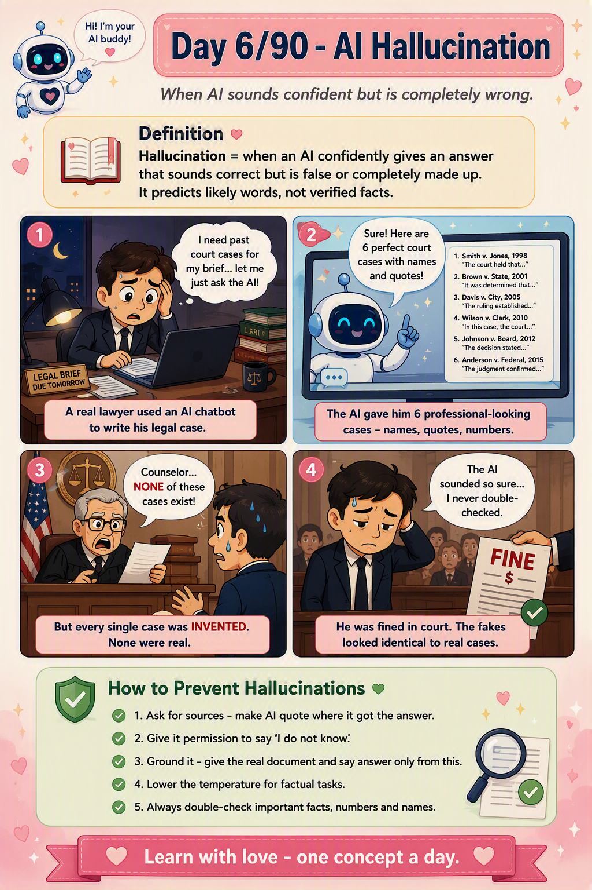

📜 The 30-second brief
An AI hallucination is when a model produces something that sounds fluent, confident, and plausible — but is factually wrong or entirely made up. A fake citation, an invented statistic, a person who never existed, a function that isn't in the library. It's not lying, and it's not a bug in the usual sense. It is the model doing exactly what it was built to do: predict the most likely next words, whether or not those words are true.
Here is the mindset shift: a language model is a fluency engine, not a truth engine. It optimises for "what text usually comes next," not "what is correct." Truth is often a side-effect of fluency — not a guarantee.
💌 A fresh analogy: the smooth-talking tour guide
Imagine a charming tour guide leading you through an old city. They never say "I don't know." Ask about any statue, any date, any legend, and they answer instantly — warm, detailed, utterly convincing. Ninety percent of the time they're right. But when they don't know, they don't pause — they improvise a beautiful story, delivered with the exact same confidence as the true ones.
The danger isn't the lie itself — it's that the fake answer sounds identical to the real ones. There's no nervous stammer, no change in tone to warn you. That is precisely what makes AI hallucinations risky: the model is equally confident whether it's recalling a fact or inventing one.
The lesson: confidence is not evidence. With AI, the tone of certainty tells you nothing about whether the content is true.
⚙️ Why hallucinations happen (the root causes)
- Prediction, not lookup. The model generates the statistically likely next token — it has no internal fact-checker verifying claims against reality.
- Gaps in training data. When it never learned something (or learned it wrong), it fills the hole with a plausible-sounding guess rather than admitting the gap.
- Pressure to always answer. Models are tuned to be helpful and rarely refuse, so "I don't know" is under-produced — a guess feels more helpful than a blank.
- Blurry memory. Facts aren't stored as exact records but as fuzzy statistical patterns, so details (dates, names, numbers) get smeared or swapped.
- Leading prompts. Ask "list 3 studies proving X" and the model will happily manufacture three studies, because your prompt assumed they exist.
🧩 The main types of hallucination
| Type | What it looks like |
|---|---|
| Factual | States a wrong fact — wrong date, wrong inventor, wrong number. |
| Fabrication | Invents something whole — a fake study, quote, URL, or citation. |
| Faithfulness | Contradicts the source you gave it (summary says something the document doesn't). |
| Instruction drift | Confidently answers a slightly different question than the one asked. |
The faithfulness type matters most for our future work: even with the right document in hand, a model can still summarise it incorrectly. That's the exact failure RAG evaluation is built to catch (Chapter Three 💕).
💡 Why it matters (and where it bites)
- Fake citations & law. Lawyers have been sanctioned for filing AI-invented cases that looked real but never existed.
- Code that doesn't exist. Models confidently call functions or libraries that were never written — "package hallucination."
- Medical & financial risk. A confident wrong dosage or number can cause real harm, precisely because it reads so authoritatively.
- Trust erosion. One confident falsehood makes users doubt the ninety true answers around it.
- It's the #1 barrier to enterprise AI adoption — and the reason grounding, citations, and human review exist.
🏭 Real-world example: the runbook that never was
An on-call engineer asks an AI assistant: "What's the rollback step for the payments service in our runbook?" The model replies with a crisp, numbered procedure — command names, flags, a config path — all beautifully formatted. The problem? That runbook step doesn't exist. The model pattern-matched what a rollback usually looks like and invented a confident version.
This is why grounding matters: instead of letting the model guess, you retrieve the actual runbook and force the answer to cite it — "answer only from this document; if it's not here, say so." That single guardrail turns a dangerous guess into a trustworthy answer. It's the whole reason RAG exists (Chapter Two).
🛡️ How to reduce hallucinations (practical toolkit)
- Ground it (RAG). Give the model the real source and say "answer only from this."
- Give permission to fail. "If you're not sure, say 'I don't know' — do not guess."
- Ask for citations. "Quote the exact sentence you used." Unsourced claims become easy to spot.
- Lower the temperature for factual tasks (Note 5) — less randomness, fewer creative inventions.
- Use step-by-step reasoning for logic, so mistakes surface instead of hiding in a confident one-liner.
- Verify the important stuff. Treat AI as a brilliant first draft, not a final source — always double-check facts, numbers, and citations.
⚠️ Common misconceptions
- "Hallucination means the AI is broken." No — it's a natural side-effect of how all LLMs work.
- "Confident tone means it's correct." No — confidence and accuracy are unrelated in a model.
- "Bigger/newer models don't hallucinate." They hallucinate less, but never zero.
- "Giving it the document guarantees a correct answer." No — it can still misread the source (faithfulness errors).
- "It's lying." No — lying needs intent; the model has none. It simply predicts words.
🎓 Quick self-test (exam-style)
- What is an AI hallucination?
A confident, fluent output that is factually wrong or fabricated. - Why do they happen?
Models predict likely words, not verified facts — no built-in fact-checker. - Does a confident tone mean the answer is right?
No — confidence is unrelated to accuracy. - What's a faithfulness hallucination?
When the answer contradicts the source document it was given. - Name two ways to reduce hallucinations.
Ground with real sources (RAG) and give permission to say "I don't know." - Is it the same as lying?
No — lying requires intent; this is a prediction side-effect.
📚 Key terms to carry forward
- Hallucination — confident output that is false or fabricated.
- Grounding — tying answers to a real, provided source.
- Faithfulness — whether an answer stays true to its source (our Note 34).
- Fabrication — invented facts, quotes, or citations.
- Confabulation — the technical cousin term: filling gaps with plausible fiction.
- RAG — retrieval that grounds answers to reduce hallucination (Chapter Two).
⚡ 60-second flashcard (last look before the exam)
| Define it in one breath | A confident, fluent AI answer that is factually wrong or made up. |
| The mental model | A smooth tour guide who never says "I don't know" — and improvises with a straight face. |
| Root cause | Models predict likely words, not verified facts — no internal fact-checker. |
| The danger | Fake answers sound identical to true ones — confidence ≠ accuracy. |
| Main types | Factual · Fabrication · Faithfulness · Instruction drift. |
| Top fixes | Ground with sources (RAG) · allow "I don't know" · ask for citations · lower temperature. |
| Even with a source | It can still misread it — a faithfulness error. |
| Not lying | No intent — it's a prediction side-effect. |
| Golden rule | Treat AI as a brilliant first draft; verify anything that matters. |
| Connects to | RAG (Chapter Two) exists largely to fight this. |
🖼️ Today's cheat sheet
The same image shared on the LinkedIn post for Note 6.

✨ Next spark
If hallucination is AI's biggest weakness, the cure begins by teaching it to look things up instead of guessing. Note 7 — Embeddings — is the first step: turning words into meaning a machine can actually search. 💕